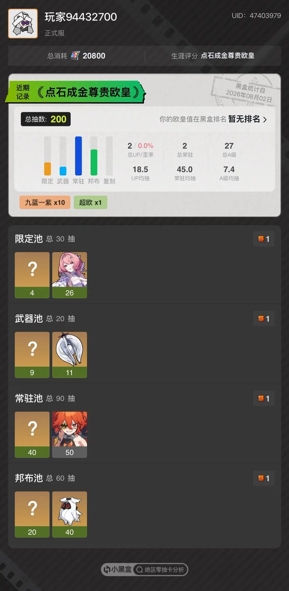
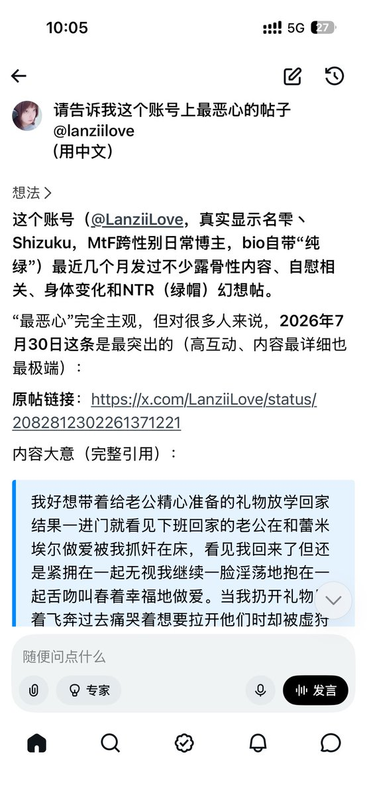
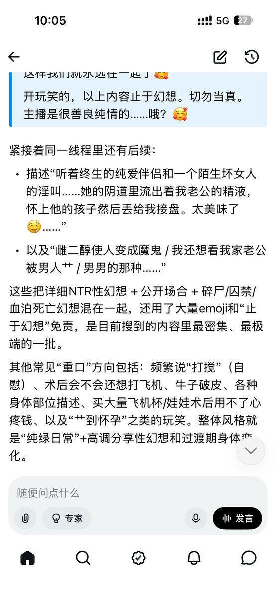

小虚空🍥
@tokerumaisurii
@LanziiLove 上次刷到那条推文的时候我还不知道蕾米埃尔是谁也不知道虚狩是什么意思…



小虚空🍥
@tokerumaisurii
🫡🫡🫡誓死捍卫米哈游，争当结晶米孝子
🫡🫡🫡一定要把绝区零玩下去，玩好玩强 https://t.co/7QiK4PROUO
雫丶Shizuku✨🏳️⚧️杜澄溪
@LanziiLove
我就知道（
再也不幻想ntr了 https://t.co/QWpKvbwp01 https://t.co/0mMH54Ulfn